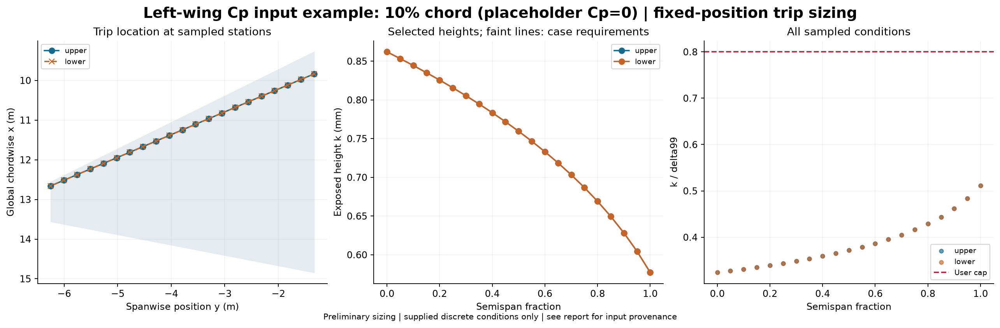

Status: feasible. PLACEHOLDER Cp=0 DEMONSTRATION, NOT ACTUAL WING Cp. The supplied left-wing geometry, MAC=4.629 m, Sref=49 m^2, Mach=0.2 and Re_MAC=8e6 are retained. All Cp values are zero solely to exercise the input workflow with a zero-pressure-gradient flat-plate baseline. Both surfaces are identical by this assumption. The Cp route uses Thwaites integral thickness and a quartic profile surrogate, not the numerical Blasius profiles of the separate flat-plate example. alpha_deg=0 is a placeholder label; physical test angle of attack is unspecified and must be set when adding real cases. Sweep sets coordinates only; three-dimensional flow and crossflow are not solved. Replace cp.csv and this provenance with the actual measurement or CFD source before using the results as a wing estimate.
Source: cp; critical Re_k: 600.0; height multiplier: 1.1; k/delta99 cap: 0.8.
Calibration: Subsonic equiaxed distributed grit; NASA TN D-3579. Mach cap 0.95 is a tool guard.

| surface | eta | x_c | height_mm | status | reason |
|---|---|---|---|---|---|
| upper | 0.0 | 0.1 | 0.8620284990966992 | feasible | |
| lower | 0.0 | 0.1 | 0.8620284990966992 | feasible | |
| upper | 0.05 | 0.1 | 0.853353710959852 | feasible | |
| lower | 0.05 | 0.1 | 0.853353710959852 | feasible | |
| upper | 0.1 | 0.1 | 0.8444415960371664 | feasible | |
| lower | 0.1 | 0.1 | 0.8444415960371664 | feasible | |
| upper | 0.15000000000000002 | 0.1 | 0.8351544431098892 | feasible | |
| lower | 0.15000000000000002 | 0.1 | 0.8351544431098892 | feasible | |
| upper | 0.2 | 0.1 | 0.8255841693672307 | feasible | |
| lower | 0.2 | 0.1 | 0.8255841693672307 | feasible | |
| upper | 0.25 | 0.1 | 0.815664461824671 | feasible | |
| lower | 0.25 | 0.1 | 0.815664461824671 | feasible | |
| upper | 0.30000000000000004 | 0.1 | 0.8053987210160388 | feasible | |
| lower | 0.30000000000000004 | 0.1 | 0.8053987210160388 | feasible | |
| upper | 0.35000000000000003 | 0.1 | 0.7946457028587232 | feasible | |
| lower | 0.35000000000000003 | 0.1 | 0.7946457028587232 | feasible | |
| upper | 0.4 | 0.1 | 0.7834684558133028 | feasible | |
| lower | 0.4 | 0.1 | 0.7834684558133028 | feasible | |
| upper | 0.45 | 0.1 | 0.771783095074851 | feasible | |
| lower | 0.45 | 0.1 | 0.771783095074851 | feasible | |
| upper | 0.5 | 0.1 | 0.7595316113155179 | feasible | |
| lower | 0.5 | 0.1 | 0.7595316113155179 | feasible | |
| upper | 0.55 | 0.1 | 0.746645286863863 | feasible | |
| lower | 0.55 | 0.1 | 0.746645286863863 | feasible | |
| upper | 0.6000000000000001 | 0.1 | 0.7330407416144451 | feasible | |
| lower | 0.6000000000000001 | 0.1 | 0.7330407416144451 | feasible | |
| upper | 0.65 | 0.1 | 0.7186165714377215 | feasible | |
| lower | 0.65 | 0.1 | 0.7186165714377215 | feasible | |
| upper | 0.7000000000000001 | 0.1 | 0.7032461768151104 | feasible | |
| lower | 0.7000000000000001 | 0.1 | 0.7032461768151104 | feasible | |
| upper | 0.75 | 0.1 | 0.6867696515262084 | feasible | |
| lower | 0.75 | 0.1 | 0.6867696515262084 | feasible | |
| upper | 0.8 | 0.1 | 0.6689795219949052 | feasible | |
| lower | 0.8 | 0.1 | 0.6689795219949052 | feasible | |
| upper | 0.8500000000000001 | 0.1 | 0.6496209275496129 | feasible | |
| lower | 0.8500000000000001 | 0.1 | 0.6496209275496129 | feasible | |
| upper | 0.9 | 0.1 | 0.6282506473913273 | feasible | |
| lower | 0.9 | 0.1 | 0.6282506473913273 | feasible | |
| upper | 0.9500000000000001 | 0.1 | 0.6043859907637655 | feasible | |
| lower | 0.9500000000000001 | 0.1 | 0.6043859907637655 | feasible | |
| upper | 1.0 | 0.1 | 0.5771764391613924 | feasible | |
| lower | 1.0 | 0.1 | 0.5771764391613924 | feasible |
Whole-wing uniform-height alternative: {'status': 'feasible', 'height_mm': 0.8620284990966992, 'reason': ''}
See per-condition results, design table, and full results and input hashes.